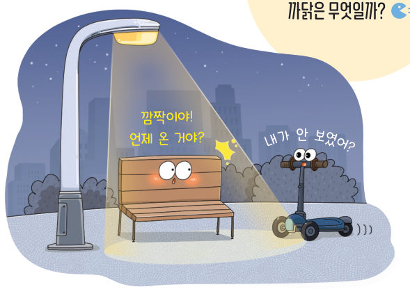
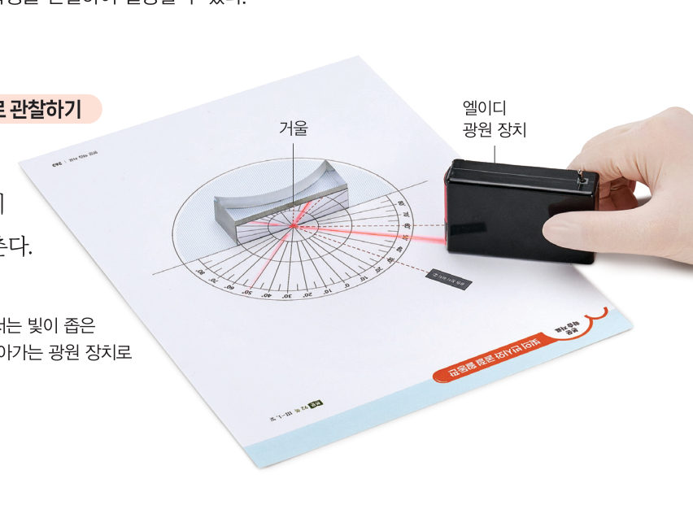
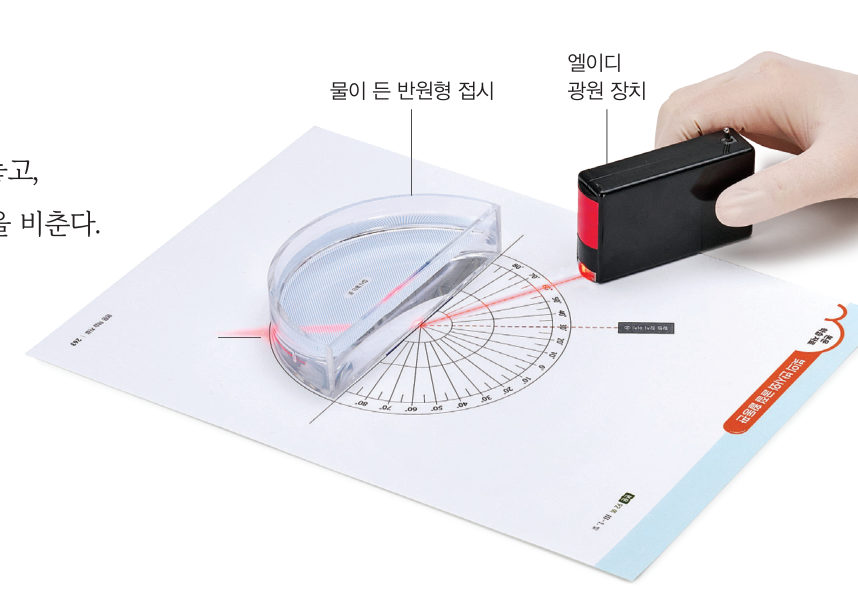
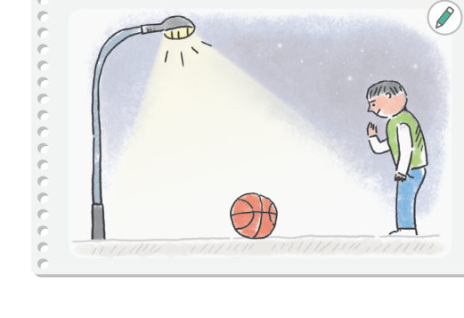
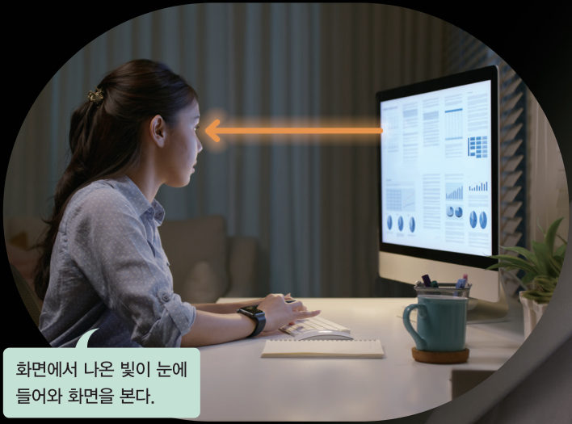
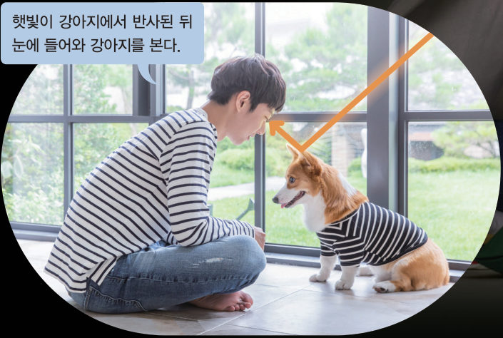

물체를 보는
과정
“깜짝이야! 언제 온 거야?” “내가 안 보였어?” 어두운 곳에 있는 물체가 잘 보이지 않는 까닭은 무엇일까? 가상 활동판에서 빛의 반사와 굴절을 관찰하고, 가로등 아래 공을 보는 빛의 경로를 그려 보자.
“우리 집 고양이가 텔레비전에 나온 고양이를 실제로 착각했는지 화면을 만지고 있어.” “텔레비전 같은 영상 장치는 실제 모습과 비슷하게 색을 나타내기 때문에 생생하게 실감할 수 있어.” 이 단원의 힌트 조각을 모으면 물체를 보는 과정과 색이 표현되는 원리를 알아내어 첫 번째 블록 질문에 답할 수 있다.
이 단원과 관련해 이미 알고 있는 것에 표시해 보자.
가로등이나 태양처럼 스스로 빛을 내는 물체를 광원이라고 한다. 광원에서 나온 빛은 직진하다가 물체의 표면에 부딪쳐 방향을 바꾸어 나오거나 물질을 통과하면서 다른 방향으로 나아간다. 빛이 다른 물체의 경계면에서 진행 방향을 바꾸어 나오는 현상을 빛의 반사라고 하고, 빛이 한 물질에서 다른 물질로 진행할 때 경계면에서 빛의 진행 방향이 꺾이는 현상을 빛의 굴절이라고 한다.


다르게 해 보기 · 가상 실험으로 빛의 반사와 굴절 알아보기
스마트 기기로 ‘광학 실험 시뮬레이션’, ‘광학 가상 실험’을 검색하여 빛의 반사와 굴절을 관찰해 보자. (위의 가상 활동판도 가상 실험이에요!)
거울 면에 수직인 선을 법선이라고 한다. 이때 거울 면에 입사하는 빛과 법선이 이루는 각을 입사각이라고 하고, 반사하는 빛과 법선이 이루는 각을 반사각이라고 한다. 빛이 반사할 때 입사각과 반사각의 크기는 항상 같다. 이를 빛의 반사 법칙이라고 한다.
빛이 굴절할 때 두 물질의 경계면에서 굴절하는 빛과 법선이 이루는 각을 굴절각이라고 한다. 빛이 굴절할 때 입사각이 커질수록 굴절각도 커진다.

우리가 물체를 보기 위해서는 빛이 있어야 하고, 그 빛이 우리 눈에 들어와야 한다. 스마트 기기의 화면은 스스로 빛을 내는 광원이다. 광원에서 나온 빛이 눈에 들어오면 광원을 볼 수 있다. 한편, 우리 주변에 있는 대부분의 물체는 스스로 빛을 내지 못한다. 광원이 아닌 물체는 광원에서 나온 빛을 반사하는데, 그 빛이 눈에 들어오면 물체를 볼 수 있다. 안경을 꼈을 때에는 물체에서 반사된 빛이 안경에서 굴절하여 눈에 들어와 그 물체를 볼 수 있다.


| ④ 빛이 반사할 때 입사각과 반사각의 크기는 항상 같다. | |
| ⑤ 빛이 굴절할 때 입사각이 커질수록 굴절각은 작아진다. | |
| ⑥ 빛이 반사하거나 굴절할 때 경계면에 수직인 선을 법선이라고 한다. |
⑧ 전등 아래에서 책을 볼 때 빛의 경로를 순서대로 놓으시오.
- 눈
- 전등
- 책
1물체를 보는 과정
⑵ 빛의 굴절: 빛이 굴절할 때 입사각이 커질수록 굴절각도 .
⑶ 광원에서 나온 빛이 직진, , 굴절하여 눈에 들어오면 물체를 볼 수 있다.
| 평가 기준 | 스스로 평가 |
|---|---|
| 과정·기능 관찰 결과를 비교·해석하여 빛의 반사와 굴절의 특징을 설명했는가? | |
| 가치·태도 물체를 보는 과정을 빛의 경로로 표현하며 흥미를 느꼈는가? |